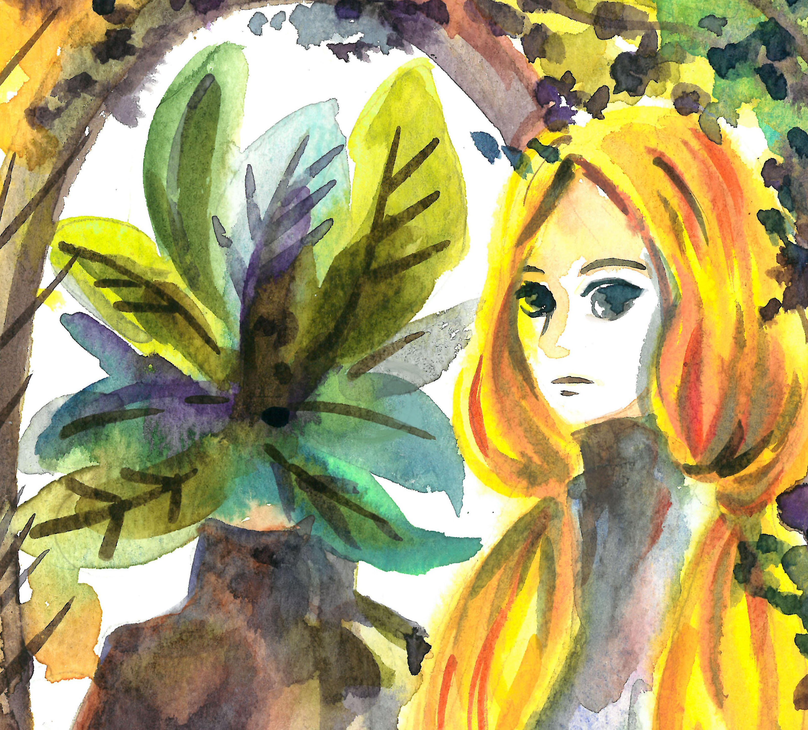
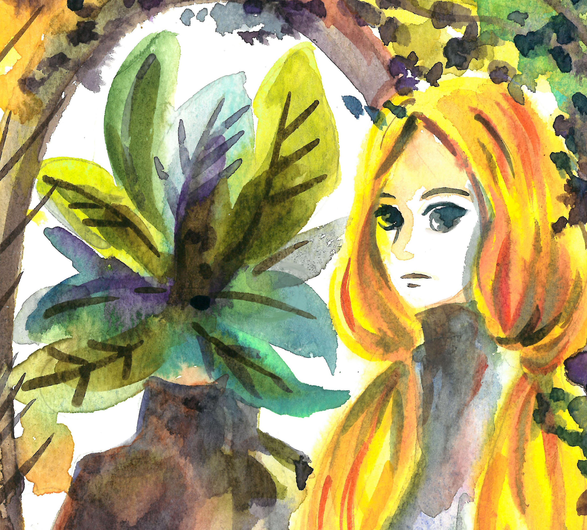

AB WANG
明明是美術卻身兼多職的平凡上班族，孤島與浪潮的集合體。
最近開始用植物與女巫編織出一系列的故事。
很喜歡插畫也喜歡設計，正嘗試著2者兼具並反映現實生活。
 AB is a freelance illustrator and a visual artist based in Taiwan.
An illustrator who prefer to use many materials to depict my pictures.
There are many inspiration from life, book, history, movie, culture, exhibitions.
I like to combine much elements together, using line and colour, sometimes it will have the different result on each project.
I prefer to use watercolour, pencil, ink, colour pencil on my work, and then use photoshop to complete it.
最近開始用植物與女巫編織出一系列的故事。
很喜歡插畫也喜歡設計，正嘗試著2者兼具並反映現實生活。
 AB is a freelance illustrator and a visual artist based in Taiwan.
An illustrator who prefer to use many materials to depict my pictures.
There are many inspiration from life, book, history, movie, culture, exhibitions.
I like to combine much elements together, using line and colour, sometimes it will have the different result on each project.
I prefer to use watercolour, pencil, ink, colour pencil on my work, and then use photoshop to complete it.
展覽經歷 Exhibition
2020 Plant,Cloth,Season【植服季】創作聯展
2019 MA Illustration Show, Gallery Different
2013 Goforward, 銘傳大學商業設計所畢業展覽, 中山創意基地
2020 Plant,Cloth,Season【植服季】創作聯展
2019 MA Illustration Show, Gallery Different
2013 Goforward, 銘傳大學商業設計所畢業展覽, 中山創意基地
學歷
Education & Training
2018-2019 MA Illustration, Kingston University London 英國 金斯頓大學 插畫研究所
2011-2013 銘傳大學 商業設計研究所
2008-2011 輔仁大學 歷史學系
2018-2019 MA Illustration, Kingston University London 英國 金斯頓大學 插畫研究所
2011-2013 銘傳大學 商業設計研究所
2008-2011 輔仁大學 歷史學系
聯繫
Contact
chromeqqq@gmail.com
chromeqqq@gmail.com
第二個網頁：回到 首頁